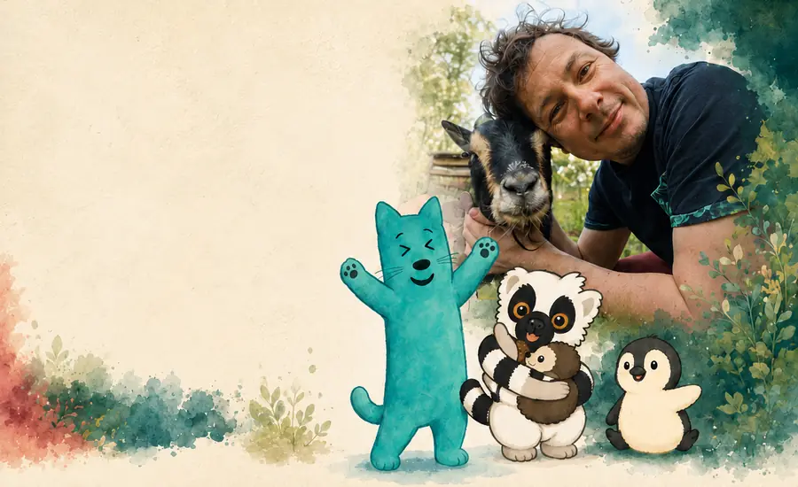
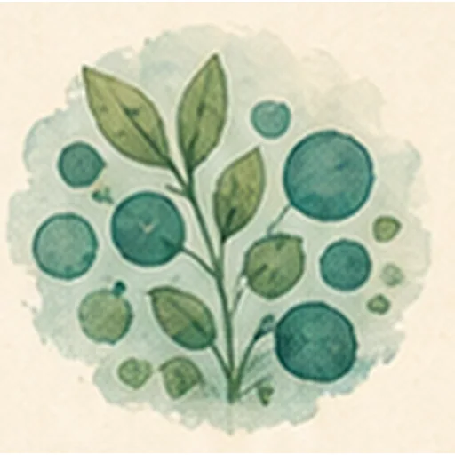
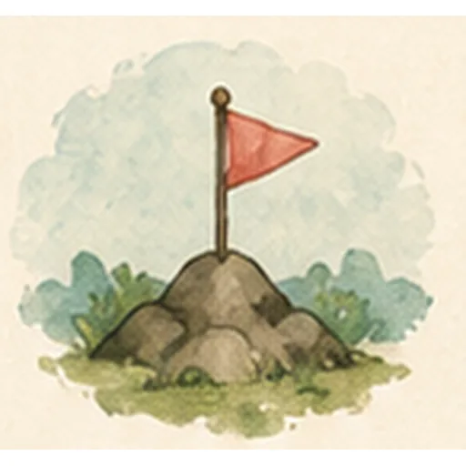
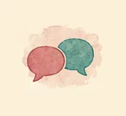
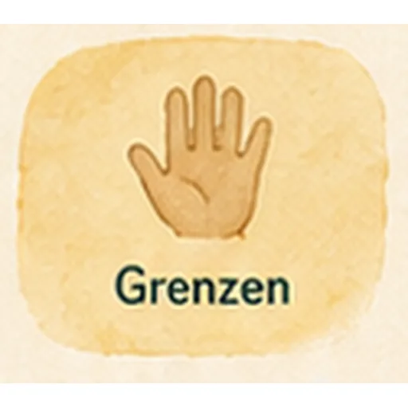

Autismus verstehen.
Sicherheit aufbauen.
Weniger Kampf, mehr Verstehen – für Kinder, Jugendliche, Eltern und das Umfeld.
Ich begleite Familien und Systeme, wenn Reizüberflutung, Rückzug, Meltdowns, Anforderungsdruck, Übergänge oder Missverständnisse den Alltag bestimmen. Nicht jedes Nein ist Trotz. Nicht jede Eskalation ist Wille.
Beziehung vor Druck. Sicherheit vor Eskalation.

Autismus verstehen.
Sicherheit aufbauen.
Weniger Kampf, mehr Verstehen – für Kinder, Jugendliche, Eltern und das Umfeld.
Ich begleite Familien und Systeme, wenn Reizüberflutung, Rückzug, Meltdowns, Anforderungsdruck, Übergänge oder Missverständnisse den Alltag bestimmen. Nicht jedes Nein ist Trotz. Nicht jede Eskalation ist Wille.
Beziehung vor Druck. Sicherheit vor Eskalation.


Worauf ich schaue




Was Familien oft brauchen
Ein besseres Verstehen von Verhalten.
Gemeinsame Sprache im Umfeld.
Praktische Ideen, die im Alltag wirklich tragen.

Mein Blick
Ich schaue auf Muster, Auslöser, Überforderung und Beziehung.
Ich suche nicht nach schnellen Korrekturen, sondern nach Wegen, die die Eigenart des Kindes achten und das System entlasten.

Mit wem ich arbeite


Typische Themen







Es geht nicht darum, dein Kind passend zu machen.
Es geht darum, passende Wege zu finden.
Kontakt aufnehmen
Schreiben Sie mir – ich melde mich zeitnah zurück.
Danke für Ihre Nachricht!
Ich melde mich so bald wie möglich.
(Demo – es wurde noch nichts versendet.)